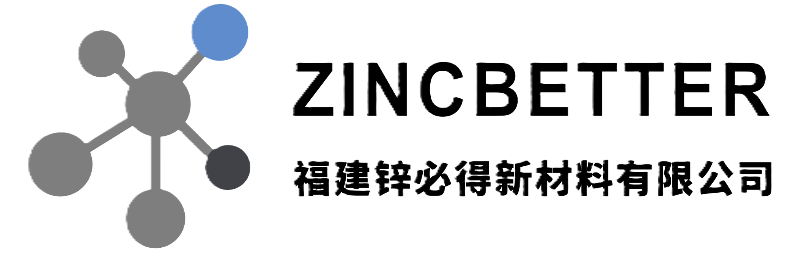

ZINC · BETTER
锌必得
从锌出发，成就力量
以科学为本，赢得信任
锌必得
专注于氧化锌（ZnO）与碱式氯化锌（TBZC）的研发、生产与应用，为农业饲料、玻璃陶瓷、橡胶化工等行业提供稳定的锌基材料解决方案。
核心产品
🏭
碱式氯化锌 TBZC
玻璃陶瓷 / 特种化工
高稳定性
我们可以为客户提供订制化材料选型到应用适配的全流程支持，可根据具体作物类型、饲料配方结构及使用条件进行订制化评估。
锌必得产品系列
公司主营活性氧化锌（ZnO）与碱式氯化锌（TBZC）两大系列，按应用方向分为饲料/医药级/颜料/橡胶鞋材工业级及特种化工/玻璃陶瓷级等。
产品明细
🧪
活性氧化锌 ZnO
氧化锌是一种应用广泛的锌化
合物。基于参数特性与应用需
求的差异，锌必得提供多种氧
化锌产品，以最大效益精确匹
配不同的应用场景。
🏭
碱式氯化锌 TBZC
饲料与动物营养
在动物营养体系中，碱式氯化锌
作为锌源使用，更关注长期使用
过程中的稳定性、安全性及配方
适配性。其应用需结合饲料体系
结构与相关使用要求综合评估。
锌化合物。基于参数特性与应用需求的差异，锌必得提供多种锌化合物产品，以最大效益精确匹配不同的应用场景。
注：具体技术指标（纯度、粒径、BET 比表面积、活性度等）以公司最新产品规格书为准。
© 福建锌必得新材料有限公司
农业与饲料
精细化工与特种材料
涂料与油漆
玻璃与陶瓷
先进材料与高科技应用
农业与饲料
在农业与饲料体系中，锌作为重要的微量元素，被广泛应用于作物营养补充与动物饲料配方中。其应用贯穿植物生长、动物营养及相关生产体系，对材料的稳定性与适配性有严格要求。
锌在体系中的作用
锌在这个体系中并非单一投入物，而是参与多种生理与代谢过程。其实际作用受方式、配方结构及使用条件的影响，通常需要进行综合考虑。
材料选型关注点
对锌基添加剂的选择，关注点通常在长期使用稳定性、批次一致性及体系适配性上。材料通常需要在满足基本参数的同时，兼顾安全性，并适配使用条件的差异。
| 常见材料类型 | 锌必得相关产品系列 |
|---|
| 氧化锌（ZnO） | ZB-P / ZB-A |
| 碱式氯化锌（TBZC） | TBZC |
实际材料选型需结合具体作物类型、饲料配方结构及使用条件进行评估。
精细化工与特种材料
在精细化工与特种材料领域，锌基材料通常被用于对反应过程、结构形成或材料表现具有明确控制需求的体系中。这类应用往往对材料的一致性、反应可预测性以及体系适配性有更高要求。
锌在体系中的作用
在该领域中，锌不再仅仅作为基础锌源存在，而是参与反应路径调控、结构稳定或功能形成等关键过程。其作用往往直接影响反应结果、材料结构或体系窗口。
材料选型关注点
精细化工与特种材料体系通常对反应条件高度敏感，因此材料选择更关注锌参与过程的可控性、体系响应的一致性以及在复杂工艺条件下的稳定表现。单一参数往往不足以决定材料的匹配度。
| 常见材料类型 | 锌必得相关产品系列 |
|---|
| 氧化锌（ZnO） | ZB-S |
| 碱式氯化锌（TBZC） | TBZC |
实际材料选型需结合具体反应原理、工艺条件及目标产物结构进行评定。
涂料与油漆
在涂料与油漆行业中，锌基材料被广泛用于各类配方体系中，参与材料结构稳定、界面行为调节及长期使用性能控制。其应用通常与配方设计、分散体系及成膜过程密切相关。
锌在体系中的作用
在这个领域中，锌通常作为无机功能组分存在，参与颜填料体系、界面稳定及配方结构调节。其引入方式和分散状态会影响涂层形成过程及体系的长期稳定性。
材料选型关注点
涂料体系通常对分散行为、体系兼容性及储存稳定性较为敏感。因此，锌基材料的选择更关注其粒径特征、分散可控性以及与树脂和其他配方组分的相容性，而非单一性能指标。
| 常见材料类型 | 锌必得相关产品系列 |
|---|
| 氧化锌（ZnO） | ZB-G / ZB-M |
| 特定锌基材料 | ZB-S |
实际材料选型需结合配方体系、加工工艺及使用环境进行综合评估。
玻璃与陶瓷
在玻璃与陶瓷行业中，锌基材料通常作为配方体系中的重要无机组分，用于调节材料结构、烧成行为及成品稳定性。其应用往往与整体配方设计和高温工艺条件密切相关。
锌在体系中的作用
在此行业中，锌主要参与组成调节、结构稳定及烧结过程的控制。其引入方式和用量通常会影响材料的致密化行为、相变路径以及最终产品的一致性。
材料选型关注点
该类体系通常在高温条件下运行，对材料的热稳定性和反应可预测性要求较高。因此，锌基材料的选择更关注其在烧成过程中的行为特征、与其他无机组分的相容性以及批次稳定性。
| 常见材料类型 | 锌必得相关产品系列 |
|---|
| 氧化锌（ZnO） | ZB-G / ZB-M |
| 特定锌基材料 | ZB-S |
实际材料选型需结合具体配方结构、烧成助剂使用及材料作用功能进行评估。
先进材料与高科技应用
在橡胶与塑料相关材料体系中，锌基材料被广泛应用于配方设计与加工体系。其中，在橡胶工业中，锌基材料是硫化与交联体系中的关键无机组分；而在塑料领域，其应用主要集中于特定配方与功能材料场景，用于参与材料结构与稳定性调节。
锌在体系中的作用
在橡胶体系中，锌通常参与硫化反应的活化过程，并对交联网络的形成与结构稳定性产生重要影响，其行为直接关联加工窗口与材料一致性。在塑料体系中，锌更多作为辅助性无机组分存在，用于特定功能配方中。
材料选型关注点
橡胶与塑料体系对加工条件、反应一致性及长期使用表现具有不同侧重。对于橡胶应用，材料选择更关注锌在硫化体系中的反应参与方式及分散可控性；而在塑料应用中，则更强调材料与配方体系的相容性及在特定工艺条件下的稳定表现。
| 常见材料类型 | 锌必得相关产品系列 |
|---|
| 氧化锌（ZnO） | ZB-M |
| 特定锌基材料 | ZB-S |
实际材料选型需结合具体配方结构、加工工艺及材料使用行为进行评估。
© 福建锌必得新材料有限公司
技术与应用
我们的技术工作以材料在实际应用体系中的表现为出发点，覆盖从技术评估到应用验证的关键环节。
🔬
材料适配性评估
在既有配方或工艺条件下，分析锌基材料与体系中其他组分的相互作用，评估其对性能、稳定性及工艺窗口（Process Window）的影响。
🔄
替代与过渡路径分析
在法规或行业标准发生变化的背景下，评估材料替代的可行性，重点关注剂量变化、工艺调整需求及对终端性能的影响。
📉
低剂量与高效率应用探索
在满足性能和合规要求的前提下，探索降低使用量、提升利用效率的可行路径，支持资源效率与环境目标。
🧪
应用验证
结合实验验证与应用反馈，持续评估材料在不同条件下的表现，为后续优化提供依据。
我们理解在许多行业中，材料升级并非简单的技术问题，而涉及成本结构、生产稳定性和市场接受度等现实限制。
并非所有问题都存在迅速和统一的解决方案，我们不会在超出实际条件的情况下作出承诺。但在可行范围内，我们持续协助客户逐步推进材料性能与合规水平的提升。
从规划开始的生产体系
福建锌必得新材料有限公司于 2025 年建成并投入运行。我们在规划阶段就围绕环保、能源效率和安全要求进行生产体系设计，并结合自动化与工艺稳定性，实现可持续运行目标，而非进行"先建设、后调整"的方式。
行业经验
我们的团队在锌基材料相关行业中持续参与近三十年，经历并适应了多轮行业整顿、环保升级和技术转型。
在不断变化的政策与市场环境中，我们通过技术积累、工艺理解和体系建设，逐步形成以合规、稳定和可持续为基础的发展路径。
7 类
产品系列（ZB-A/P/S/G/M、TBZC）
注：本页内容来自小程序「关于我们」截图，KPI 为汇总示意，准确信息以公司官方资料为准。
© 福建锌必得新材料有限公司
联系方式
🏭
福建锌必得新材料有限公司
氧化锌（ZnO）/ 碱式氯化锌（TBZC）研发生产
📍
中国福建省宁德市古田县凤都镇工业路12号
办公 / 工厂地址
💬
微信小程序「锌必得 ZincBetter」
在线咨询（当前网页即小程序镜像）
合作流程
1. 需求沟通：明确目标行业、配方结构与性能指标
2. 选型评估：结合材料作用功能推荐 ZB-A / ZB-P / ZB-S / ZB-G / ZB-M / TBZC
3. 样品测试：提供小样与对应规格书
4. 定制交付：按批次一致性要求组织生产与发货
注：电话与地址来自小程序「联系我们」页截图；邮箱未在截图中出现，如需要请向公司确认后补入。本页为小程序镜像示意。
© 福建锌必得新材料有限公司